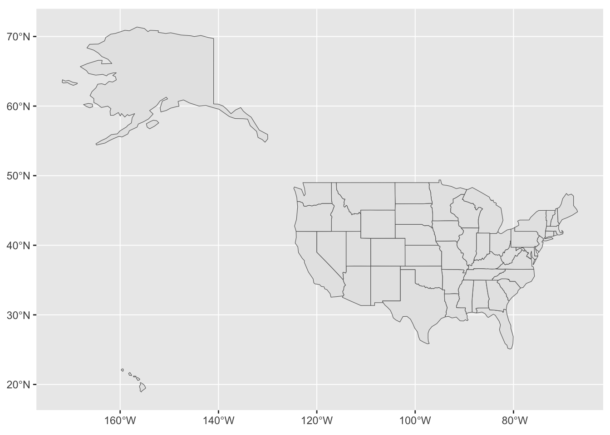
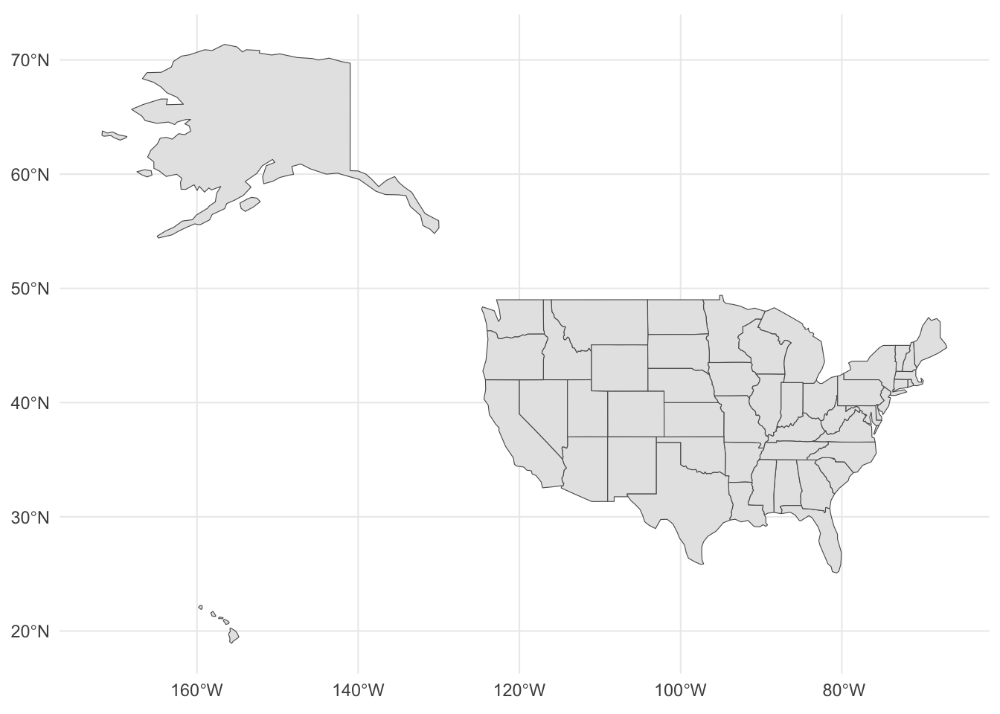
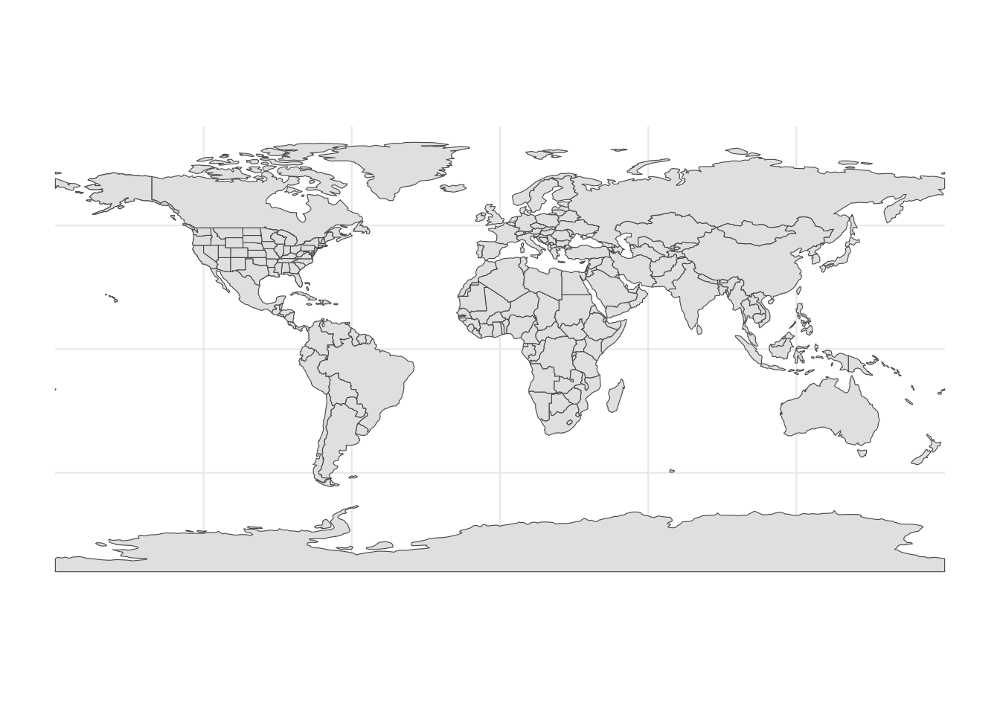
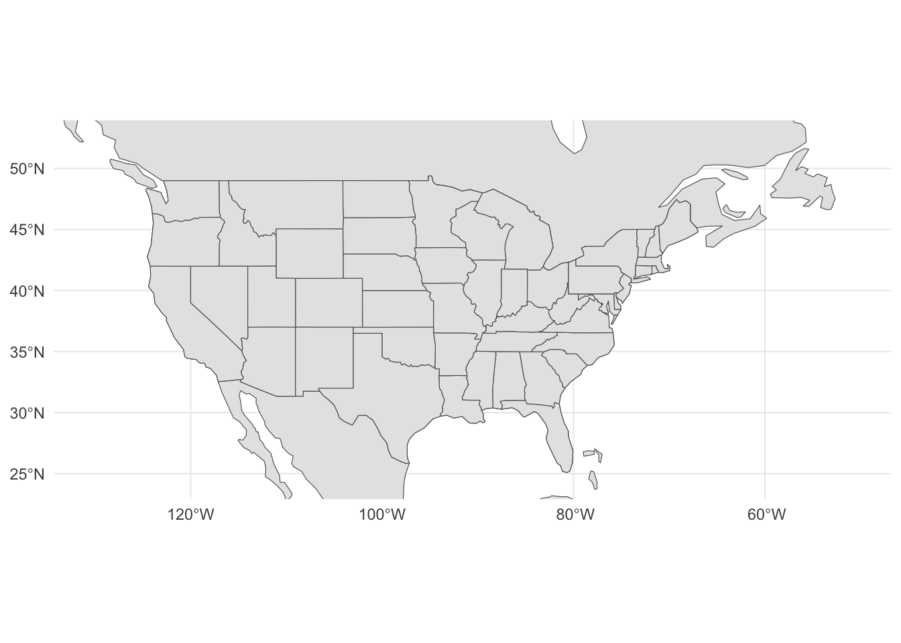
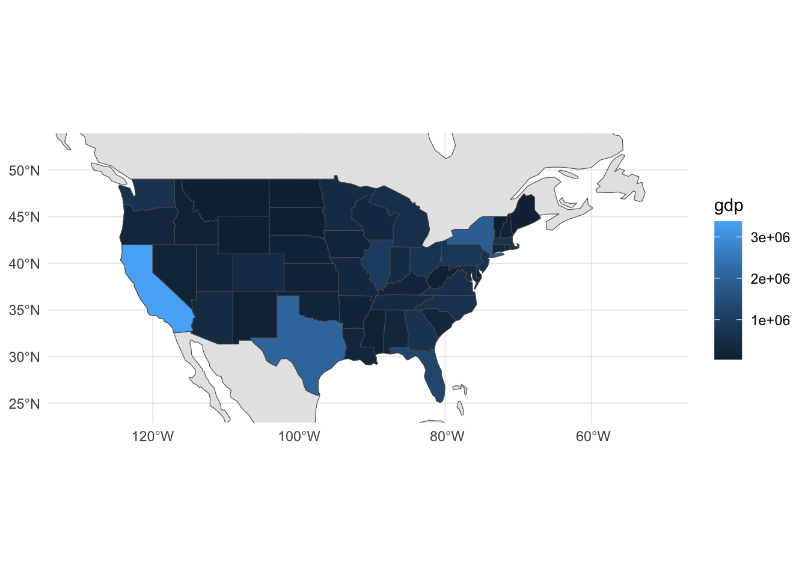
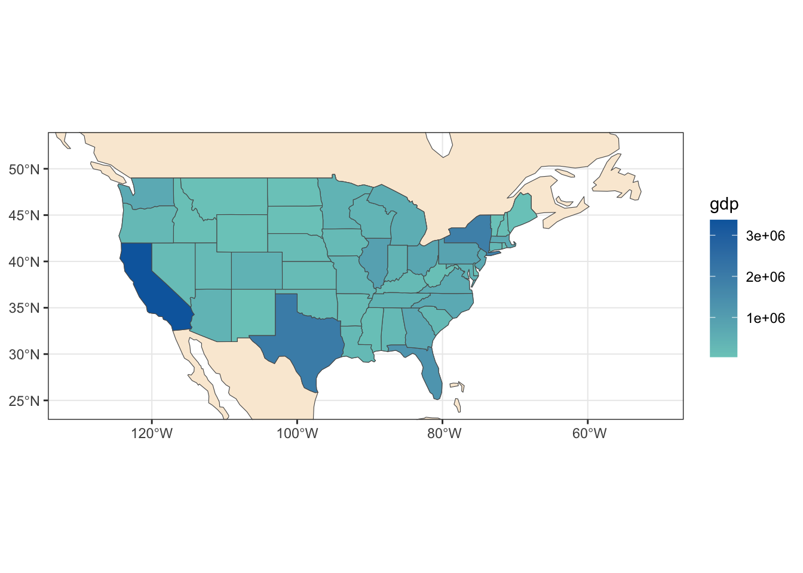
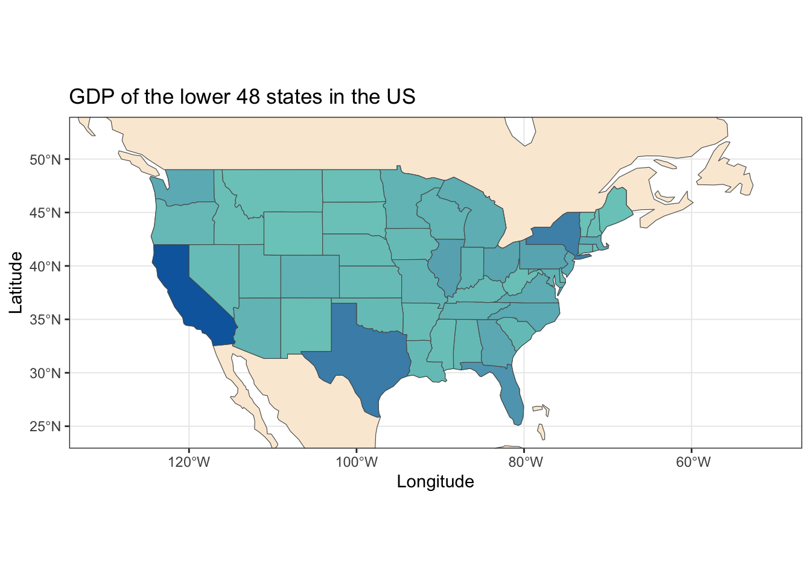
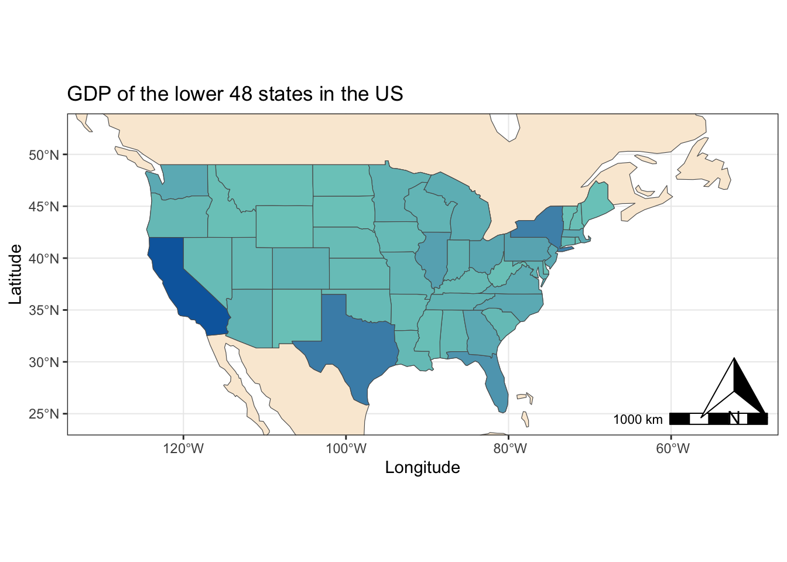
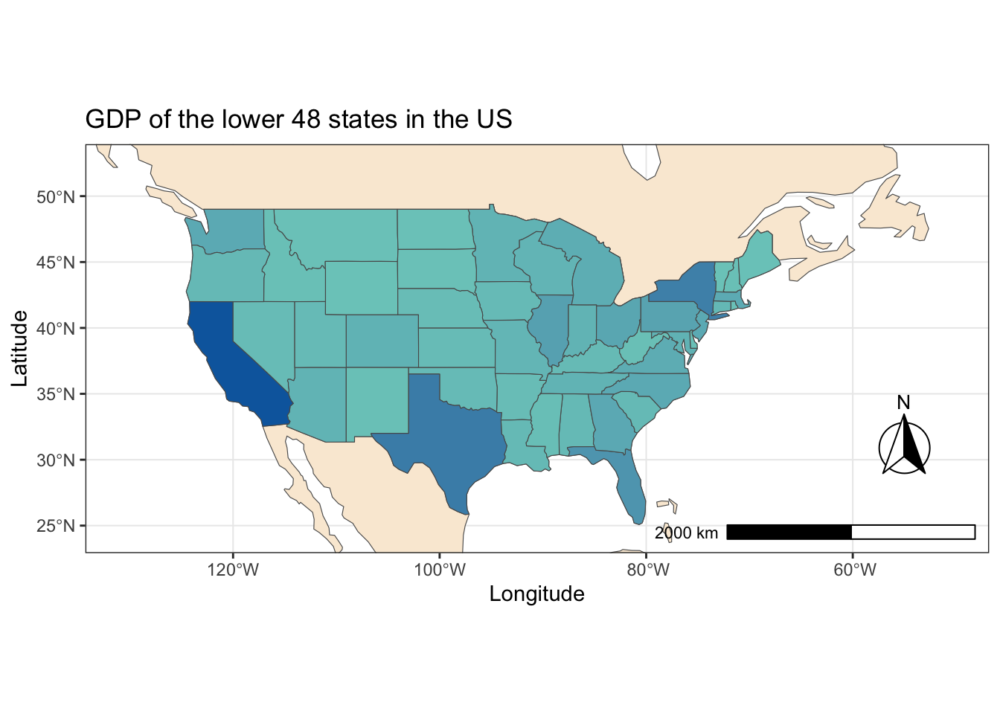

library(ggplot2)
library(sf)Intro to vector spatial data in R
Learning Objectives
- Load, plot and manipulate spatial data into R
- Customize maps with basic functions
Packages used in this tutorial:
ggplot2,sf,tidyverse,ggspatial
This little tutorial will give you some basic commands to plot maps in R, using the packages ggplot and sf.
First, let’s load the necessary packages. The maps will be plotted following the ggplot standard, so we need that one. Additionally, our spatial objects will be loaded into R in the SF format, so it helps us to have the sf package loaded, to give us some functions to work with them.
For this small tutorial, our goal will be to build a simple map of the lower 48 states in the United States, showing the states boundaries. We will also color code the states by their GDP and do some further customization.
1. Creating the base map
The spatial data we will be using to create this map comes from a collection called Natural Earth. This online database has shapefiles and rasters for several different geographic features across the globe, both political and social features (such as countries and states boundaries, large highways and large urban areas across the worlds) as well as physical features (such as elevation, water bodies, etc.).
We will use the states data, which is saved to out data folder. To load it into R using the sf package, use this command:
states <- read_sf('data/shapefiles/us_state_boundaries/ne_110m_admin_1_states_provinces.shp')We can quickly check on our states object to see what it looks like by typing it into the console and pressing enter. You can see that the states shapefile is stored in R as a dataframe (or a matrix). More specifically, it is saved as a tibble, which is the name of dataframes when used under the tidyverse package. This is basically an attribute table (with features as rows and attributes as columns) which is interpreted by R as a spatial file that can be plotted in geographic space using ggplot. You can check this blogpost and also this website to learn more about the Simple Feature format to store spatial data in R.
Now we can plot that data using ggplot. Conveniently, ggplot already has a geometry function made to deal with sf spatial objects, the function geom_sf.
ggplot()+geom_sf(data = states)
Notice that 1) ggplot automatically puts up the coordinates around your map; 2) the color theme used for plotting is the ggplot default (which looks good for graphs, but might not be the best for maps); 3) this dataset has all states (not only the lower 48), and also does not have any information on other countries, so it looks like the US is floating on nothing.
Let’s try and solve these little issues step by step. First, let’s use another theme besides the default theme in ggplot.
ggplot()+geom_sf(data = states)+theme_minimal()
I like this better, it feels more clean.
Now, let’s load an additional dataset with the countries of the world, so we can plot the states surrounded by neighboring countries. This way, it won’t feel like the US is floating in the middle of nowhere. Notice in the code below that to plot an extra spatial data (i.e., an extra layer in our map), we just need to repeat the geometry geom_sf with the new data.
countries <- read_sf('data/shapefiles/world_countries/ne_110m_admin_0_countries.shp')
ggplot()+geom_sf(data = countries)+geom_sf(data = states)+theme_minimal()
Now we see all states plus the countries around the US (Canada and Mexico). This is better, cause now the US area seems connected to the countries around (like in real life). However, the countries dataset that we used contains all countries in the world, so ggplot will be default try to plot everything (which is why our new map shows the whole world and no focus on our actual goal).
To solve this issue, we can use the function coord_sf to tell ggplot the geographic extent of our map. We need to do so by providing two vectors to this function: a vector called xlim, where we tell the lowest and highest longitude (in that order) of our extent; 2) and a vector called ylim, where we tell the lowest and highest latitude (in that order) of our extent. These values are given as decimal coordinates. You can easily retrieve them by checking google maps (or any other map application), to figure our the lower and highest values that would encompass the area you wanna plot.
For our map, we will use the values shown bellow to focus on the lower 48 states.
ggplot()+geom_sf(data = countries)+geom_sf(data = states)+
coord_sf(xlim = c(-130.327727,-50.774995), ylim = c(24.321161,52.537236))+
theme_minimal()
Now we have a map with a close up on the United States. Notice how, unlike before, we still maintain the lines of Mexico and Canada borders, which helps make the map look more realistic.
2. Color coding our map
How do we move from where we are into color coding the states based, for instance, on their GDP?
Since we are using the ggplot package, we know that we can use aes() to map each plotted polygon to a value of GDP within our shapefile. Remember: the states shapefile is simply stored in R as tibble, with features as rows and attributes as columns. If we take a look at the names of the columns in our shapefile (using colnames()), we will see there are many attributes, but none of them is GDP. This means we need to find that information elsewhere and match it to our current shapefile.
For this map, we will use the 2021 GDP values for all US states provided by the US Bureau of Economic Analysis. That data is already present in our data folder in csv format; it has two columns, one for the state name and another one for the GDP value. We can load the data using the read_csv function from the tidyverse package, and then call the object to take a quick look at it.
library(tidyverse)
states_gdp <- read_csv('data/states_gdp.csv')
states_gdp# A tibble: 51 × 2
name gdp
<chr> <dbl>
1 Connecticut 298395
2 Maine 77963
3 Massachusetts 641332
4 New Hampshire 99673
5 Rhode Island 66571
6 Vermont 37104
7 Delaware 81160
8 District of Columbia 153670
9 Maryland 443930
10 New Jersey 682946
# … with 41 more rowsThe GDP data set seems okay. Now we need to add the GDP column from this dataset to the attribute table present within our states object. This is technically called a join operation, which is a common operation used when working with spatial files in any mapping platform. A join operation is basically merging two datasets based on a column they have in common. In our case, our states shapefile has a column with the name of each state; so does our states_gdp dataset. Therefore, we can use that column to tell R to add the GDP values from states_gdp to the states shapefile based on the column name. Since both our datasets are in a tibble format, this is basically a data wrangling problem that can be solved with the tidyverse package. This is the advantage of storing spatial data in R as an sf format; since the spatial data is stored as simple data frame/tibble, it is ready to be processed along with all your other non-spatial data frames you may already have in your project.
A useful function to perform this operation is the function left_join(). It allows you to merge two dataframes, and match the rows in both dataframes by a column they have in common. The name of the function denotes which dataframes will guide the join: for left_join the dataframe that we provide first (in our case here, it’s the one that we feed to the function through %>%) will be the one guiding the join. This means that we will look in the second dataframe (or the new dataframe, also called the right dataframe) for everything that matches the first (or the original dataframe, also called the left dataframe). If something in the second dataframe doesn’t match the first, we just don’t add it. But all rows of the first dataframe are always kept (since it’s the guiding dataframe).
In our case here, the original (or left) dataframe is the states shapefile. The new (or right) dataframe is the new object states_gdp we just created. By doing the left_join through the column name, we are telling R: go through every row of the states shapefile and check the value in the column name. For each row, look into states_gdp for the rows that have the same value for column name. Grab all those rows that match and stick it to the states, in the order they are matching. Essentially, we are going through every state in the shapefile and looking for their gdp info in states_gdp, and adding that info to our shapefile.
To perform this operation, we will call our states object, then use the %>% operator to feed into the left_join function. Then, we provide: 1) the dataset to be joined (the second dataframe); 2) which column should be used to match the rows in both datasets (argument by). Finally, we store the results in our states object (effectively updating our shapefile).
states <- states %>% left_join(states_gdp, by='name')Now, if you use colnames(states) you will notice that the column gdp was added to the end of our states object. Now we can use that column in ggplot to color code our states. That can be done by using the argument fill within the aesthetics function: we are basically telling R that the color that should be used to “fill” the polygons should be mapped (i.e., should be based on) the column gdp in our dataset.
ggplot()+geom_sf(data = countries)+geom_sf(data = states,aes(fill = gdp))+
coord_sf(xlim = c(-130.327727,-50.774995), ylim = c(24.321161,52.537236))+
theme_minimal()
This is what we wanted!
Notice that 1) the color scheme used by ggplot was chosen from a default value (in this case, a gradient of dark to light blue); 2) how the gradient of color is changing depends on the values in the data: R will automatically split the range of values in half, set the extremes of the gradient to the minimum and maximum values, and the intermediate shade will be set to the middle value; 3) the format of the legend is taken from the dataset: the title just says the name of the column (gdp) whereas the values of the legend follows a mathematical notation. All these characteristics can be further modified with some customizations. We’ll see some of them in the next section.
3. Some further customization
Let’s play around with changing the aspect of our map a little bit.
First, let’s change the default theme used (theme_bw() focus on black and white lines and keeps the line of the box surrounding the plot). Let’s also change the color of the countries polygons surrounding the states. We can also use the fill aesthetics here to inform the color we want.
# Customizing background color
ggplot()+geom_sf(data = countries, fill = 'antiquewhite')+
geom_sf(data = states,aes(fill = gdp))+
coord_sf(xlim = c(-130.327727,-50.774995), ylim = c(24.321161,52.537236))+
theme_bw()
We can also customize the color that is being used for the states. We could choose a gradient color that we think might have a better appeal with our audience, or convey the informaiton we want better. One good option to decide on color schemes for mapping is to check this little application in the ColorBrewer website. There, you can explore different types of gradientes, with different color, choose different number of data classes and even filter only gradients that are colorblind safe. The application allows you to quickly visualize the gradient in a map, so you can have a feel of how it would look like. Finally, it also shows you the hexadecimal code for each color so you can use it in your own programming language (which in our case is R).
Taking a quick look at the application, it seems to me that a sequential gradient from light green to a dark blue would convey what we want to show here: states with lower GDP in a ligher color and higher GDP in darker color, with a nice intermediate in the middle. The choice of green and blue was personal; you could choose any other color that you think would be more appealing to you and/or your audience.
To apply this gradient here, we will use the ggplot function scale_fill_gradient2. This function allows us to set the colors for the lower, middle and higher end of our gradient. From the ColorBrewer website, I can get the hexadecimal code for each color: #f0f9e8 for light green, #7bccc4 for the intermediate and #0868ac for the darker blue.
ggplot()+geom_sf(data = countries, fill = 'antiquewhite')+
geom_sf(data = states,aes(fill = gdp))+
coord_sf(xlim = c(-130.327727,-50.774995), ylim = c(24.321161,52.537236))+
theme_bw()+scale_fill_gradient2(low = '#f0f9e8',mid = '#7bccc4',high = '#0868ac')
This looks nice. We could still work on our gradient a little bit more if we want. For instance, notice most states are falling with intermediate to low levels, so we could modify our gradient to show more of a difference on that range. But for our first map, I think this is pretty good.
Let’s move focus now to our legend. As mentioned before, we could do several customizations to change the title and number format. But since this would involve adding quite a few ggplot commands, I think we can leave that for another tutorial. For now, we could actually get rid of our legend, since our color gradient is somewhat intuitive: we can see there’s a change in GDP values and the states with similar colors have similar values of GDP. For our first map, we don’t really need to show all the values or the legend title (we could add that info to the overall title of the map, for instance).
We can get rid of the legend by setting legend.position ='none' in our theme() function.
ggplot()+geom_sf(data = countries, fill = 'antiquewhite')+
geom_sf(data = states,aes(fill = gdp))+
coord_sf(xlim = c(-130.327727,-50.774995), ylim = c(24.321161,52.537236))+
theme_bw()+scale_fill_gradient2(low = '#f0f9e8',mid = '#7bccc4',high = '#0868ac')+
theme(legend.position = "none")
This already looks much better. Finally, let’s focus on putting some information on our maps. We can add axes labels and a title the same way we did for basic graphs in ggplot: using the labs() function.
# Customizing axis labels and title
ggplot()+geom_sf(data = countries, fill = 'antiquewhite')+
geom_sf(data = states,aes(fill = gdp))+
coord_sf(xlim = c(-130.327727,-50.774995), ylim = c(24.321161,52.537236))+
theme_bw()+scale_fill_gradient2(low = '#f0f9e8',mid = '#7bccc4',high = '#0868ac')+
theme(legend.position = "none")+
labs(title = "GDP of the lower 48 states in the US",
x = 'Longitude',
y = 'Latitude')
Finally, it would be nice to make our map look more professional by adding a scale and a north arrow indicator (basic items that are important in any map). We can do that by using some functions from the ggspatial package.
library(ggspatial)To add those items, let’s use the functions annotation_scale and annotation_north_arrow. We can tell ggplot where in our map we want those items to show up (‘br’ means the items will be plotted in the bottom right corner of the map).
# Adding scale and north arrow
ggplot()+geom_sf(data = countries, fill = 'antiquewhite')+
geom_sf(data = states,aes(fill = gdp))+
coord_sf(xlim = c(-130.327727,-50.774995), ylim = c(24.321161,52.537236))+
theme_bw()+scale_fill_gradient2(low = '#f0f9e8',mid = '#7bccc4',high = '#0868ac')+
theme(legend.position = "none")+
labs(title = "GDP of the lower 48 states in the US",
x = 'Longitude',
y = 'Latitude')+
annotation_scale(location = "br")+
annotation_north_arrow(location = "br")
Looking better, but our arrow and scale are being plotted on top of each other. The annotation functions allows us to customize these items a little bit. For annotation_scale, let’s set a width_hint, which will determine the width of our scale in our final map (in inches). Let’s also customize our north arrow: with pad_x and pad_y, we can nudge our arrow away from the borders of our map (in this case, 0.3 inches in the x axis, and 0.5 inches in the y axis). We also change the style of our arrow to one of the styles available in the function (north_arrow_fancy_orienteering sounds prettier).
# Adjusting scale and north arrows
ggplot()+geom_sf(data = countries, fill = 'antiquewhite')+
geom_sf(data = states,aes(fill = gdp))+
coord_sf(xlim = c(-130.327727,-50.774995), ylim = c(24.321161,52.537236))+
theme_bw()+scale_fill_gradient2(low = '#f0f9e8',mid = '#7bccc4',high = '#0868ac')+
theme(legend.position = "none")+
labs(title = "GDP of the lower 48 states in the US",
x = 'Longitude',
y = 'Latitude')+
annotation_scale(location = "br", width_hint = 0.3)+
annotation_north_arrow(location = "br",
pad_x = unit(0.3, "in"), pad_y = unit(0.5, "in"),
style = north_arrow_fancy_orienteering)
Now we can go on to save our map with the ggsave function. We have to say the name of our file and the values of width and height for the pic (which is in units of inch, by default). Changing the width and height will change the appearance of your final map, so it is nice to play around with these numbers, changing them, saving a file and checking it, until you get to a format that you like.
ggsave('saved_maps/us_states_gdp.tiff', width = 15, height = 10)…and there we go! We have completed our first ever map using ggplot.